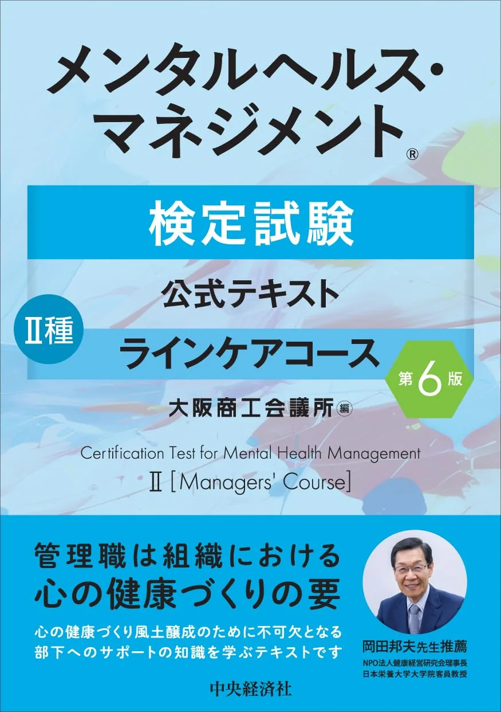
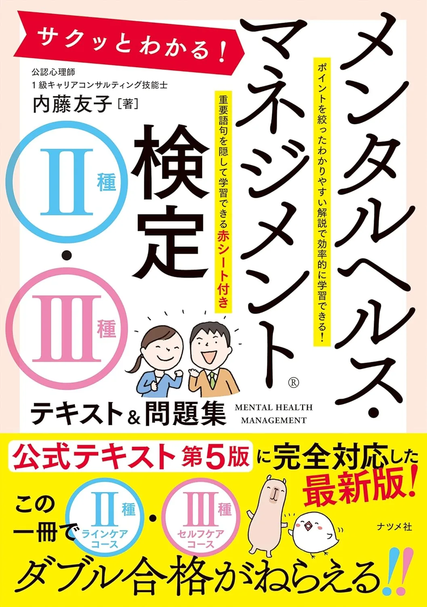

メンタルヘルス・マネジメント検定II種のおすすめテキスト3選【2027年度版・独学】
メンタルヘルス・マネジメント検定II種を独学で始めるなら、最初のテキスト選びが学習効率を左右します。出題の基準は公式テキスト第6版ですが、1周目は解説の読みやすい市販書も心強い味方になります。この記事では、定番の3冊を正本・読みやすさ・予算の観点で比較し、選び方と使い分けを整理します。価格は変動するため購入前に販売ページで確認してください。
この記事の信頼性について
| 執筆 | メンタルヘルス二種マスター編集部（資格学習サイトの編集チーム） |
|---|---|
| 確認 | 公式情報確認担当（公開前に一次情報・販売ページと照合する担当者） |
| 事実確認日 | 2026-11-13 |
| 主な参照元 |
1テキスト選びの3つの基準
テキストは、何冊も買うより基準を決めて絞る方が仕上がります。独学では、次の3点で選ぶと迷いにくくなります。
- 正本かどうか：出題の基準は公式テキスト第6版
- 読みやすさ：1周目を最後まで通せる解説か
- 予算：無理なく続けられる価格か
出題の基準は公式テキスト第6版なので、最終的な照合用に1冊は手元に置きたいところです。一方で、初めて学ぶ1周目は、図解の多い市販書の方が通しやすいこともあります。価格は改定や在庫で変わるため、購入前に必ず販売ページで確認してください。
おすすめテキスト3選（比較）
価格・在庫・版情報は執筆時点（2026-06-12）のAmazon税込参考です。購入前に必ず販売ページでご確認ください。
| 順位 | 商品名 | 価格（税込参考） | ページ数 | 向いている人 |
|---|---|---|---|---|
| 1 | メンタルヘルス・マネジメント検定試験公式テキスト Ⅱ種 ラインケアコース〔第6版〕 | ¥3,630 | 320 | 出題範囲の正本に沿って7領域を体系的に学びたい管理監督者 |
| 2 | スッキリわかる メンタルヘルス・マネジメント検定試験Ⅱ種 テキスト&問題集 第2版 | ¥2,200 | 272 | イラスト解説で短時間に第1周したい初学者 |
| 3 | サクッとわかる! メンタルヘルス・マネジメント検定Ⅱ種・Ⅲ種テキスト&問題集 | ¥2,200 | 256 | II種とIII種をまとめて押さえたい人・コンパクトに始めたい人 |

メンタルヘルス・マネジメント検定試験公式テキスト Ⅱ種 ラインケアコース〔第6版〕
- 検定試験の出題正本（第41回公開試験以降は第6版準拠）
- 7領域の章立てが試験範囲と一致
- 他社テキストと併用する際の照合基準になる

スッキリわかる メンタルヘルス・マネジメント検定試験Ⅱ種 テキスト&問題集 第2版
- テキストと演習問題を1冊で回せる
- TAC系の解説で初学者向け
- 公式テキスト読了後の理解確認にも使える

サクッとわかる! メンタルヘルス・マネジメント検定Ⅱ種・Ⅲ種テキスト&問題集
- II種・III種を1冊でカバー
- 要点整理と問題演習が一体
- 独学の第1冊候補として比較しやすい
2公式テキスト第6版（出題の正本）
公式テキスト第6版は、大阪商工会議所が編む出題の正本です。7領域の章立てが出題範囲とそのまま対応しています。
特徴は次のとおりです。
- 出題の基準となる正本（A5判・約320ページ）
- 7領域を体系的に網羅
- 市販書と併用するときの照合基準になる
価格は執筆時点のAmazon税込参考で3千円台と、市販書よりやや高めです。文章は硬めなので、1周目から通読するのが大変なら、読みやすい市販書と組み合わせる方法もあります。迷ったときに戻る1冊として、手元に置いておくと安心です。
3スッキリわかる 第2版（TAC出版）
スッキリわかる第2版は、TAC出版のテキスト兼問題集です。1冊でインプットと演習を回せるのが利点です。
特徴は次のとおりです。
- テキストと問題を1冊でカバー（A5判・約272ページ）
- 図解が多く初学者が読み進めやすい
- 公式テキスト読了後の理解確認にも使える
価格は執筆時点の税込参考で2,200円前後と手に取りやすい水準です。まず全体像をつかみたい1周目に向いています。公式テキストと併用すれば、読みやすさと正確さの両方を補えます。
4サクッとわかる II種・III種（ナツメ社）
サクッとわかるは、ナツメ社のコンパクトな1冊です。II種とIII種をまとめて押さえたい人に向いています。
特徴は次のとおりです。
- II種・III種を1冊でカバー（A5判・約256ページ）
- 要点整理と問題演習が一体
- 短時間で学習を始めたい人の第1冊候補
価格は執筆時点の税込参考で2,200円前後です。II種とIII種を同じ日に併願する人や、まずコンパクトに始めたい人に使いやすい構成です。本格的に7領域を詰めたくなったら、公式テキスト第6版で補完するとよいでしょう。
5買う順番と使い分け
テキストは、役割を分けて使うと効率が上がります。1周目は読みやすさ、仕上げは正確さを優先します。
おすすめの使い分けは次のとおりです。
- 1周目：読みやすい市販書で全体像をつかむ
- 2周目以降：公式テキスト第6版で正確に固める
- 演習で迷ったら公式テキストの該当章に戻る
最初から公式テキストを通読するのが大変なら、市販書を入り口にするのが現実的です。どちらか1冊に絞るなら、出題の正本である公式テキスト第6版を軸にします。テキストを一通り終えたら、次は問題集で演習量を確保しましょう。
6購入順序·問題集·50問通し（6〜9月例）
テキストは「要項確認→演習で弱点把握→1冊決定→問題集追加」の順で、段階的にそろえると無駄がありません。最初から何冊も買う必要はありません。
まず要項で出題範囲と合格基準を確認し、演習で領域別の正答率を記録して弱点を把握します。
- 次に
- 本記事の3冊からテキストを1冊決め
- 公式テキスト第6版を学習の軸にし
問題集は、弱点が見えてから追加します。試験2週間前からは新規購入を止め、手持ちの教材の解き直しに集中してください。
7次に読む：独学計画と問題集比較
テキスト1冊が決まったら、次の記事へ進んでください。 ・学習計画 → 勉強法・学習計画 / ・試験形式 → 試験形式 / ・演習1冊 → おすすめ問題集3選 / 収益リンクは比較表のAmazonボタンと本文下の関連リンクに集約しています。
8よくある質問
独学なら公式テキストと市販書のどちらを買うべきですか？
テキストは何冊くらい用意すればよいですか？
テキストを終えたら次は何をすればよいですか？
記事の基本情報
| ジャンル | 独学対策 |
|---|---|
| タグ | 独学 / 教材 / 学習計画 |
公式情報の確認
公式情報の確認：メンタルヘルス・マネジメント検定II種の最新情報は、試験のご紹介（公式）などの公式情報を必ず確認してください。本人に割り当てられた試験会場は受験票の表記が正本です。